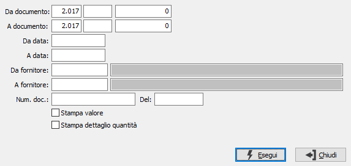

Stampa fatture
Il programma attiva la stampa delle fatture di acquisto, sulla base dei parametri di selezione inseriti dall’utente.

DA DOCUMENTO: i tre campi contengono rispettivamente anno, causale e numero del documento da cui si vuole iniziare la selezione. Confermando a vuoto, la selezione inizia dal primo documento compatibile con i successivi parametri.
A DOCUMENTO: i tre campi contengono rispettivamente anno, causale e numero del documento con cui si vuole concludere la selezione. Confermando a vuoto, la selezione termina con l’ultimo documento compatibile con i successivi parametri.
DA DATA: data documento da cui si vuole iniziare la selezione. Confermando a vuoto, la selezione inizia dalla prima data valida.
A DATA: data documento con cui si vuole concludere la selezione. Confermando a vuoto, la selezione termina con l'ultima data valida.
DA FORNITORE: eventuale codice del fornitore, presente in anagrafica fornitori, da cui si vuole iniziare la selezione. Confermando a vuoto, la selezione inizia dal primo fornitore valido. Sul campo sono attive le funzioni di ricerca (F9).
A FORNITORE: eventuale codice del fornitore, presente in anagrafica fornitori, con cui si vuole terminare la selezione. Confermando a vuoto, la selezione termina con l’ultimo fornitore valido. Sul campo sono attive le funzioni di ricerca (F9).
NUM.DOC. / DEL: Specificare il numero e/o la data del documento del fornitore per cui effettuare la stampa.
STAMPA VALORE: check box per abilitare la stampa dei prezzi e degli importi. Valori ammessi: vuoto = non stampa i valori; spunta = stampa i valori.
STAMPA DETTAGLIO QUANTITÀ: check box. Se contiene la spunta, indica se nella stampa desideriamo visualizzare il dettaglio delle quantità.